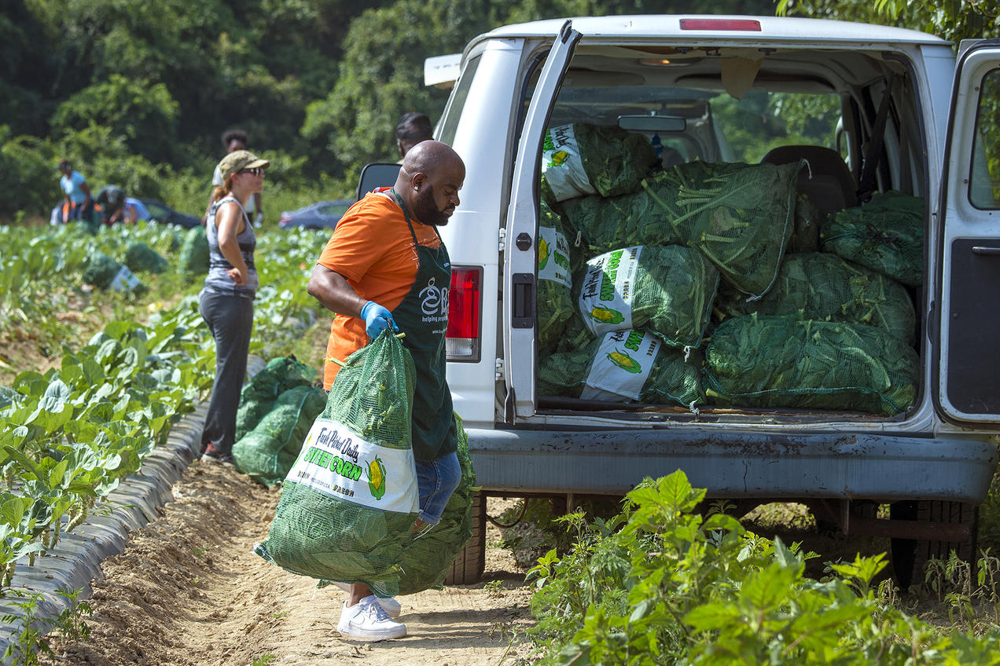
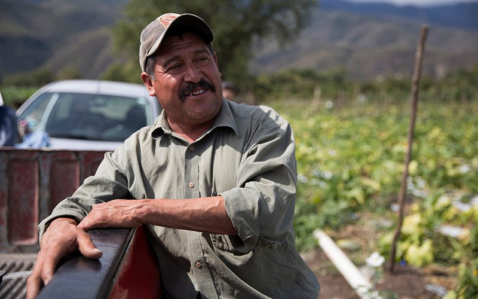
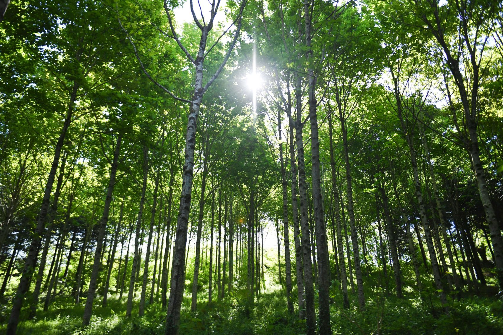

Limiting Food Waste

We work closely with our
suppliers partners to mitigate the environmental harm of producing our ingredients and we hold our suppliers (and ourselves) to the highest environmental standards. We have switched many of our
ingredients and processes to alternatives that have a lower impact. We do this not because it’s necessarily demanded of us, but because it’s the right thing to do.
We have committed to numerous initiatives aimed at reducing our environmental impact across our business, such as only using all organically grown ingredients in
all our snacks .
Supporting Workers Along Supply Chain

Farmers and ranchers are
the heroes of our food system. And they play a critical role
in creating a more sustainable future for our industry, and the world.
The changes we make at the roots of our supply chain will deliver the greatest
impact. Without the support and leadership of
farmers, none of it will happen. They've got to lead the way and we’re
here to partner with them on this important, ongoing effort. With that being said, B2TW is
taking proper measures to ensure such crucial individuals are earning proper wages and benefits.
Sustainable Packaging

Packaging plays a critical role
in preserving the safety, nutrition and quality of the food we make.
It also presents challenges in terms of raw materials used in production as
well as the waste generated when improper disposal occurs. We share the global
concern about the effects of plastic packaging on the environment, especially
the accumulation of ocean plastic waste and associated threats to marine life.
As responsible stewards of natural resources, we aim to reduce our environmental
impact across each product’s full life cycle. Several key strategies drive our work
to reduce the impact of packaging production and waste. With that being said, this is why
we encourage customers to bring back their re-usable container issued at the point of first purchase.